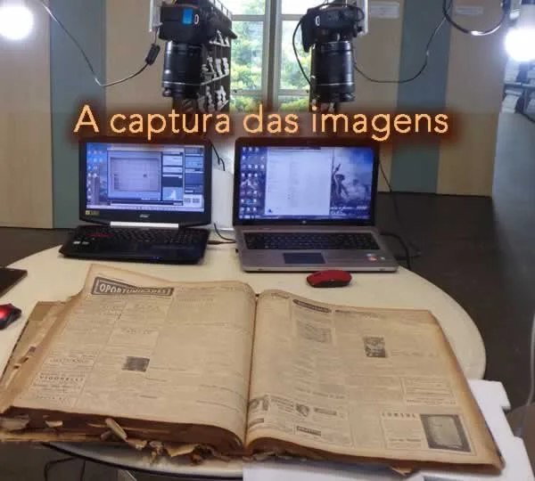
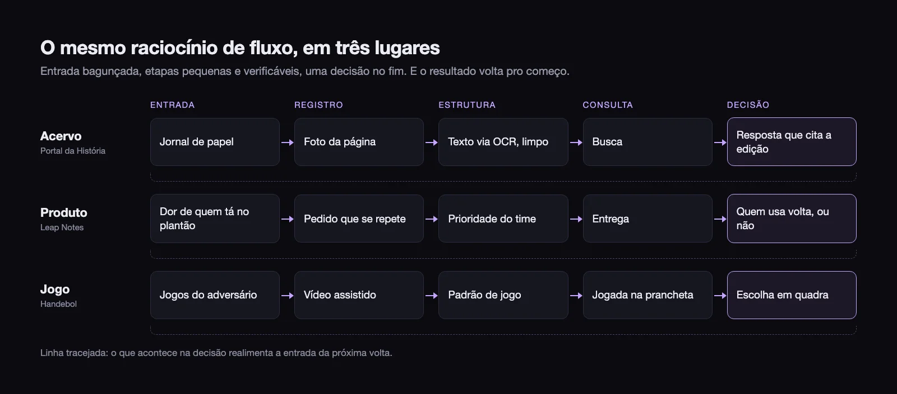

Neste artigo
Tenho uma provocação que gosto de soltar em conversa de corredor: a computação nasceu como uma vertente da matemática, mas cresceu tanto, com tanto investimento e tanta área nova, que hoje eu enxergo o contrário. A matemática virou uma das ferramentas da computação. Trate como opinião de quem passa o dia usando as duas, não como aula de história. O que me interessa nessa inversão é outra coisa: a parte mais útil do curso não foi uma linguagem nem um algoritmo específico. Foi aprender a olhar qualquer coisa como sistema: o que entra, o que sai, onde trava.
Eu aprendo construindo. Então esse jeito de pensar não veio de aula. Veio de aplicar em coisas que, à primeira vista, não têm nada a ver uma com a outra.
O mesmo desenho em três lugares
No Portal da História do Ceará, o problema chegou como uma pilha. Jornais desde o século XIX, fotografados página por página, e nenhuma forma de pesquisar neles. O que destravou foi parar de ver "o acervo" e ver uma esteira: papel vira imagem, imagem vira texto pelo OCR, texto sujo vira texto limpo, texto limpo vira busca, busca vira resposta. Cada etapa tem entrada e saída que dá pra conferir sozinha. Quando um resultado vinha errado, eu não precisava desconfiar do sistema inteiro, só achar em qual etapa o dado estragou. Contei a parte do OCR neste outro texto e a da IAcema, que responde citando a edição de onde tirou a informação, aqui.

O mesmo raciocínio serviu num lugar bem menos óbvio, a quadra. Eu jogo handebol e basquete universitário e levo isso a sério. Antes de jogo importante, monto o scout do adversário: assisto aos jogos dele, procuro o padrão que se repete, transformo isso em jogada na prancheta e chego na quadra com uma decisão mais fácil de tomar. É a mesma esteira do acervo, só que a entrada é vídeo e a saída é uma escolha que alguém faz em dois segundos. Foi esse material que levamos pra final do handebol que o Triunfal venceu. O processo completo, inclusive o erro que me fez jogar uma versão fora, tá neste post.
E tem o tablet de 2014 que ia pro lixo e virou o Taleszin OS. Ali o sistema era literal: 512 MB de RAM, e cada serviço que eu escrevia era uma decisão sobre quem merece memória primeiro.

Gestão também é sistema
No Leap Notes eu sou o CTO, e a parte que menos aparece do cargo é justamente a que mais usa esse jeito de pensar. Meus sócios são estudantes de medicina. Eles trazem a dor de quem tá no plantão, e eu traduzo isso em fluxo: de onde vem o pedido, quantas vezes ele se repete, o que ele tira da fila se entrar agora, como a gente vai saber se funcionou.
Time enxuto não tem gordura pra decidir no achismo. Então boa parte do meu trabalho fora do código é desenhar o caminho da decisão. Os números que importam ficam num painel que os sócios abrem sem precisar me perguntar nada, porque se toda decisão passar por mim eu viro o gargalo do sistema. Uma ideia nova não entra porque é legal. Entra quando a gente consegue dizer qual problema de usuário ela resolve e o que deixa de ser feito por causa dela.
Isso é computação aplicada a gente. A mesma pergunta do OCR ("em que etapa estragou?") funciona numa reunião em que uma entrega atrasou.
Uma opinião impopular sobre trabalho em grupo
Trabalho em grupo da faculdade, do jeito que costuma ser montado, ensina pouco. Principalmente em computação, onde quase tudo se aprende pondo a mão. O formato empurra o projeto pras costas de uma pessoa e o resto se divide entre quem ajuda um pouco e quem só assina. A culpa é do formato, não de quem tá na turma: nota coletiva, prazo curto, ninguém dono do resultado.
Então, sempre que deu, eu fiz sozinho, porque queria extrair o máximo de cada trabalho. Fazendo sozinho, eu precisava pensar o problema de forma abstrata, decidir o que o projeto era antes de decidir como fazer, organizar meu próprio fluxo de trabalho e entregar tudo. Isso me rendeu prêmios em algumas disciplinas, competindo nos mesmos critérios com equipes de quatro ou cinco pessoas.
O que fazia a diferença era o trabalho ter alma. Quando uma pessoa só segura a visão do começo ao fim, o resultado tem identidade, dá pra sentir que alguém se importou com cada escolha. Em grupo dividido em pedaços isso costuma se perder na colagem final.
Pode parecer contradição com a minha rotina, que é toda em time: Leap Notes com os sócios, PHC em parceria com o Prof. Gildácio Sá, a equipe do Woolly. Pra mim encaixa. O que eu aprendi fazendo sozinho foi ser dono do resultado, e é isso que eu levo pro time. Num projeto de verdade, cada um sendo dono da sua parte do fluxo é o que faz o conjunto andar.
Criatividade conta mais agora
Computação não é só o lado preto no branco, de seguir a especificação e passar no teste. Isso a IA já faz muito bem, e cada vez mais barato. O efeito colateral é a internet cheia de coisa genérica: telas iguais, textos iguais, projetos que parecem saídos do mesmo molde.
O que fica difícil de copiar é o resto. Enxergar o fluxo onde os outros veem uma pilha, juntar um scout de handebol com um pipeline de OCR na mesma cabeça, decidir que um tablet velho merece um sistema operacional. Foi construindo coisas assim que eu aprendi quase tudo que sei, e é o que eu pretendo continuar fazendo, sozinho quando der e em time quando o problema for maior que eu.

Full stack de Fortaleza. Ciência da Computação na UECE, cofundador e CTO do Leap Notes, tech lead do Portal da História do Ceará.